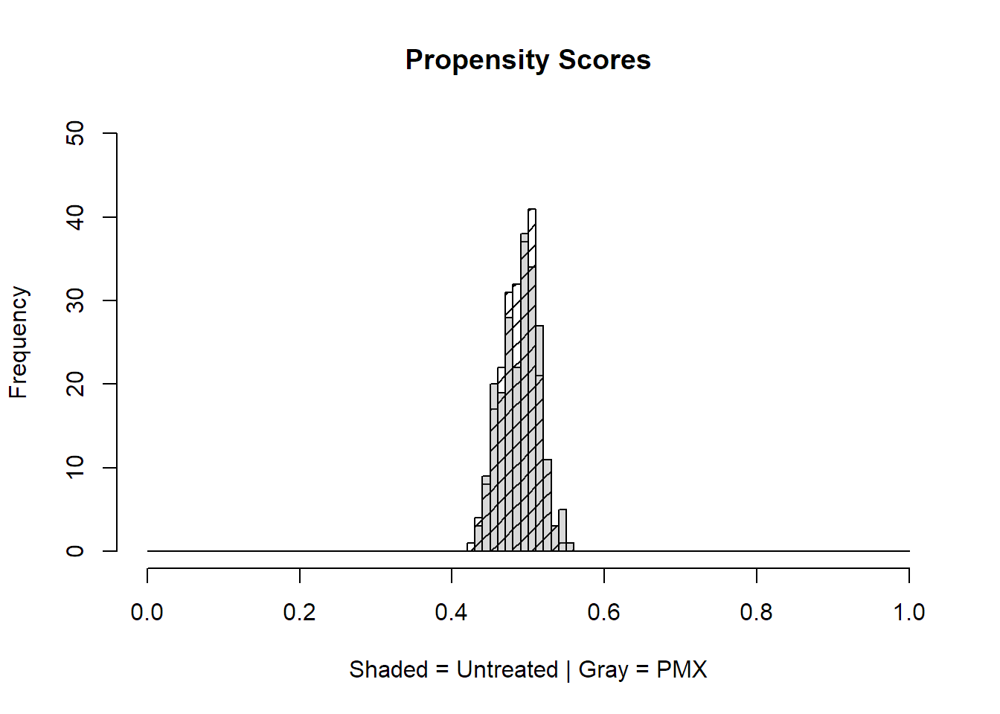

Rによる傾向スコアの実装
サンプルデータを作成する
適当なパッケージがないため、仮想データを作成する。
Effect of Targeted Polymyxin B Hemoperfusion on 28-Day Mortality in Patients With Septic Shock and Elevated Endotoxin Level
The EUPHRATES Randomized Clinical Trialより
元ネタは敗血症性ショックに対するエンドトキシン吸着療法の多施設共同RCT(60施設)
PMX療法(透析)対シャム療法(偽透析：透析している振り)
サンプル数:450名のRCT
Age, Sex, 平均血圧(Arterial pressure mean:MAP)、重症度スコア(APACHEⅡ)、人工呼吸器の有無(Mechanical
ventilation)、菌血症の有無(Bacteremia)介入:エンドトキシン吸着療法(PMX)
アウトカム:28日後死亡(twentyeight_day_mortality)
今回は多施設観察研究と想定し施設数も作成して、10施設とする
JAMA
パッケージの読み込み
library(dplyr)
# パイプを使うため
library(magrittr)
# シミュレーションデータを作るため
library(simstudy)仮想データの実装
set.seed(123) # seedを設定することで必ず同じデータが毎回できるので再現性の固定
# まず施設IDの作成
b <- defData(varname = "institution_id", dist = "noZeroPoisson", formula = 3)
c <- genData(450, b)
# 各変数の作成
a <- data.frame(rnorm(450,59,8),rbinom(450,1,prob=0.6),rnorm(450,72,5),rnorm(450,28,5),rbinom(450,1,0.94)
,rbinom(450,1,0.30),rbinom(450,1,0.5),rbinom(450,1,0.34))
colnames(a) <- c('Age','Sex','MAP','APACHEⅡ','Mechanical_ventilation','Bacteremia','PMX','twentyeight_day_mortality')
# 列の名前を付ける
# sex 1=male, Mechanical_ventilation yes=1, Bacteremia yes=1, PMX yes=1, 28day_mortality yes=1 両者を結合する。
pmx <- cbind.data.frame(c,a)
pmx <- as.data.frame(pmx)作成したデータの確認
summary(pmx)## id institution_id Age Sex
## Min. : 1.0 Min. : 1.000 Min. :36.52 Min. :0.0000
## 1st Qu.:113.2 1st Qu.: 2.000 1st Qu.:54.19 1st Qu.:0.0000
## Median :225.5 Median : 3.000 Median :59.33 Median :1.0000
## Mean :225.5 Mean : 3.142 Mean :59.11 Mean :0.5822
## 3rd Qu.:337.8 3rd Qu.: 4.000 3rd Qu.:64.59 3rd Qu.:1.0000
## Max. :450.0 Max. :10.000 Max. :79.57 Max. :1.0000
## MAP APACHEⅡ Mechanical_ventilation Bacteremia
## Min. :59.25 Min. :12.76 Min. :0.0000 Min. :0.0000
## 1st Qu.:68.47 1st Qu.:25.05 1st Qu.:1.0000 1st Qu.:0.0000
## Median :71.81 Median :28.54 Median :1.0000 Median :0.0000
## Mean :72.00 Mean :28.30 Mean :0.9267 Mean :0.2689
## 3rd Qu.:75.03 3rd Qu.:31.90 3rd Qu.:1.0000 3rd Qu.:1.0000
## Max. :88.95 Max. :44.45 Max. :1.0000 Max. :1.0000
## PMX twentyeight_day_mortality
## Min. :0.0000 Min. :0.0000
## 1st Qu.:0.0000 1st Qu.:0.0000
## Median :0.0000 Median :0.0000
## Mean :0.4889 Mean :0.3467
## 3rd Qu.:1.0000 3rd Qu.:1.0000
## Max. :1.0000 Max. :1.0000str(pmx)## 'data.frame': 450 obs. of 10 variables:
## $ id : int 1 2 3 4 5 6 7 8 9 10 ...
## $ institution_id : num 2 4 3 5 6 1 3 5 3 3 ...
## $ Age : num 59.5 53.4 53.3 66.1 50.9 ...
## $ Sex : int 1 1 1 1 1 1 1 0 1 1 ...
## $ MAP : num 66.9 68 73.5 80.2 77.4 ...
## $ APACHEⅡ : num 27.3 20.8 24 32.4 32.5 ...
## $ Mechanical_ventilation : int 1 1 1 1 1 1 1 1 0 1 ...
## $ Bacteremia : int 0 0 0 0 0 1 1 0 0 0 ...
## $ PMX : int 0 0 0 1 0 0 0 0 1 1 ...
## $ twentyeight_day_mortality: int 1 0 0 0 0 1 0 0 1 0 ...おおむね狙い通りのデータになっていることが分かる。
今回は施設というクラスターは無視して傾向スコアを用いて解析を実装する。
傾向スコアの作成
実際の論文ではRCTのため傾向スコアや多変量解析は行われていない。
今回は観察研究という設定で計算する。
PMXを行うか否かについて関係する共変量を設定する。
まず共変量をオブジェクトに格納する。
こうすることの利点はモデルを作る際に見やすくなることである。
covariateNames <- c(
"Age",
"Sex",
"MAP",
"APACHEⅡ",
"Mechanical_ventilation"
)治療指標の作成
便利のために、pmxとは別に治療指標の変数を作成する。治療指標は因子型としておく。
pmx$treat <- as.factor(pmx$PMX)#### 連続予測子の標準化
#標準化された連続予測子
for (var in covariateNames) {
if (class(pmx[,var])!="factor") { pmx[,var] = (pmx[,var]-mean(pmx[,var]))/sd(pmx[,var]) }
}傾向スコアの推定
#ロジスティック回帰モデルの式の作成準備
ps.formula <- paste(covariateNames, collapse="+")
ps.formula <- formula(paste("treat~",ps.formula))
print(ps.formula)## treat ~ Age + Sex + MAP + APACHEⅡ + Mechanical_ventilation#クラスタリングを無視した傾向スコアの推定
#ps.model <- glm(ps.formula, data = pmx, family=binomial)
ps.model <- pmx %>% glm(ps.formula, data = ., family=binomial(link = "logit"))
#クラスタリングを無視した傾向スコアを得る
pmx$ps <- fitted(ps.model)傾向スコアの評価
library(pROC)
ROC <- pmx %>% roc(treat ~ ps, data = ., ci = TRUE)
ROC##
## Call:
## roc.formula(formula = treat ~ ps, data = ., ci = TRUE)
##
## Data: ps in 230 controls (treat 0) < 220 cases (treat 1).
## Area under the curve: 0.5255
## 95% CI: 0.472-0.579 (DeLong)今回はAUC 0.5255と低い値であり、モデルの精度として良くないようである。
Common supportの評価
傾向スコアにばらつきがないかを評価する
hist(pmx$ps[pmx$treat==0], density = 10, angle = 45, main="Propensity Scores",
breaks=seq(0,1,by=0.01),
xlim=c(0,1), ylim=c(0,50), xlab="Shaded = Untreated | Gray = PMX")
hist(pmx$ps[pmx$treat==1], col=gray(0.4,0.25), breaks=seq(0,1,by=0.01),
xlim=c(0,1), ylim=c(0,50),add=T) 
PMX群とコントロール群では傾向スコアの分布は同じくらいであることが分かる。
ATEの推定
今回は、試験の対象集団全体におけるPMXの効果を知りたいのであるからAverage treatment effect(ATE)を 推定することとする。
# 重みの計算
pmx$psw <- with(pmx, ifelse(treat==1, 1/ps, 1/(1-ps)))
summary(pmx$psw)## Min. 1st Qu. Median Mean 3rd Qu. Max.
## 1.745 1.929 1.995 2.000 2.056 2.301今回は傾向スコアに極端なweightはないが、もしある場合は対処を考える必要がある。
方法として、
極端なweightがモデルの仕様の誤りによるものかどうかをチェックするために、傾向スコアモデルを再指定する
傾向スコア法を変更する
weight打切りを行う
安定化weightを使用する。
3については99%タイルでweightを切り捨てるという方法がある。
4についてはweightを加重平均などで安定化する方法である。
今回は不要だが、参考までにweightの安定化を行う。
#重みの正規化
pmx$psw <- pmx$psw/mean(pmx$psw)
# 統合
with(pmx, by(psw, PMX, summary))## PMX: 0
## Min. 1st Qu. Median Mean 3rd Qu. Max.
## 0.8724 0.9464 0.9803 0.9782 1.0087 1.1163
## ------------------------------------------------------------
## PMX: 1
## Min. 1st Qu. Median Mean 3rd Qu. Max.
## 0.9079 0.9842 1.0158 1.0228 1.0559 1.1506安定化する前と比べてもほとんど変化はないことが分かる。
今回は仮想データであるため、元々傾向スコアの分布が比較的均一であったため、安定化や切り捨ては不要で
ある。
実際のデータでは極端なweightを取ることがあるため、対処が必要になることがある。
両群のバランス評価
介入群とコントロール群でバランスがとれているか確認が必要である。
そのためにtwangパッケージを用いる。
require(twang)
baseline.balance <- bal.stat(data=pmx,#データセット
var=covariateNames,#バランスチェックの確認に含む変数のリスト
treat.var="treat",#介入・曝露の変数
w.all=1,#傾向スコアのweightなどがある場合、デフォルトは1 (no weighting)
sampw=1,#サンプリングウェイト (no weighting)
get.means=T, #平均と分散を計算するかどうか
get.ks=F,#コルモゴロフ・スミルノフ統計量を計算するかどうか
estimand="ATE",#ATEとATTどちらか
multinom=F)#多項傾向スコアを用いるかどうか
baseline.balance.es <- baseline.balance$results
summary(abs(baseline.balance.es$std.eff.sz))## Min. 1st Qu. Median Mean 3rd Qu. Max.
## 0.008427 0.022860 0.029534 0.035160 0.044532 0.070447標準化効果量は最大で0.070447とバランスはとれているようである。
続いて傾向スコアで重みづけした後のバランス評価を行う。
psw.balance <- bal.stat(data=pmx,#データセット
var=covariateNames,#バランスチェックの確認に含む変数のリスト
treat.var="treat",#介入・曝露の変数
w.all=pmx$psw,#傾向スコアのweightなどがある場合
sampw=1,#サンプリングウェイト (no weighting)
get.means=T, #平均と分散を計算するかどうか
get.ks=F,#コルモゴロフ・スミルノフ統計量を計算するかどうか
estimand="ATE",#ATEとATTどちらか
multinom=F)#多項傾向スコアを用いるかどうか
psw.balance.table <- psw.balance$results
summary(abs(psw.balance.table$std.eff.sz))## Min. 1st Qu. Median Mean 3rd Qu. Max.
## 5.949e-05 9.701e-05 1.924e-04 2.899e-04 5.454e-04 5.550e-04標準効果量はかなり小さく、今回のデータでは重みづけする前後でもバランスはとれていた。
治療効果の評価
今回はデータ作成の都合上、簡単のために生存までの時間は無視してロジスティック回帰モデルで評価する。
そのために変数を論理型に変更しておく。
pmx$twentyeight_day_mortality <- as.logical(pmx$twentyeight_day_mortality)
pmx$PMX <- as.logical(pmx$PMX)
str(pmx$twentyeight_day_mortality)## logi [1:450] TRUE FALSE FALSE FALSE FALSE TRUE ...論理型に変換できたことを確認
final.model <- pmx %>%
glm(twentyeight_day_mortality ~ PMX, family = binomial(link = "logit"), weights = psw, data = .)## Warning in eval(family$initialize): non-integer #successes in a binomial glm!ここでの警告はstack.flowを見る限り問題はなさそう。
二重にロバストな推定
library(lmtest)
library(sandwich)
result <- coeftest(final.model, vcov = sandwich)summary(result)## Estimate Std. Error z value Pr(>|z|)
## Min. :-0.69787 Min. :0.1403 Min. :-4.9734 Min. :0.0000007
## 1st Qu.:-0.48800 1st Qu.:0.1549 1st Qu.:-3.5517 1st Qu.:0.1188765
## Median :-0.27813 Median :0.1694 Median :-2.1299 Median :0.2377523
## Mean :-0.27813 Mean :0.1694 Mean :-2.1299 Mean :0.2377523
## 3rd Qu.:-0.06826 3rd Qu.:0.1839 3rd Qu.:-0.7082 3rd Qu.:0.3566282
## Max. : 0.14161 Max. :0.1985 Max. : 0.7136 Max. :0.4755040exp(result[2])## [1] 1.152124exp(-1.96*result[4])## [1] 0.6777543exp(1.96*result[4])## [1] 1.475461PMXのオッズ比は1.15 (95%CI 0.68 - 1.48)であった。
RRに変換すると、1.068となる。
https://clincalc.com/Stats/ConvertOR.aspx#1
これは元論文の1.09と近いが、そもそも介入と非介入の割合が50%なので、リスク比に変換するのは正しくないであろう。
【参考文献】
Practical Propensity Score Methods Using R SAGE Publications, Inc